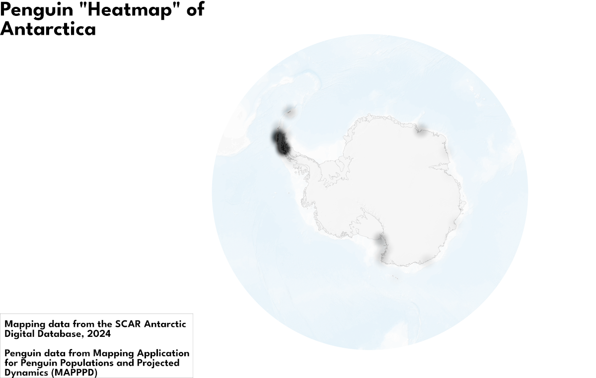

November 10th 2024
[Development In Progress]
It's day 11 of the 30DayMapChallenge, and today's theme is "Arctic", which i naïvely misinterpreted as "Antarctica". To be fair, I was only off by a hemisphere.
Anyway, i hope you enjoy today's vizual about penguins, suppose I'll have to do polar bears next time, if they don't rotate it again next year 😑.
Again, a very simple visual, but I feel like it's definitely a massive leap forward in my understanding of QGIS, especiallty when it comes to heatmapping. It's funny how much easier geographic heatmaps are to make when you use a tool built for geographic data 🙃. Hope to see you tomorrow for day 12 of the challenge: "Time and Space"